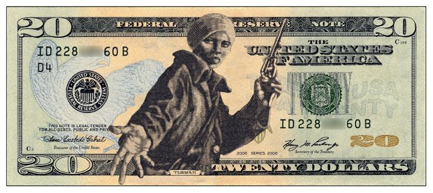

Aim: How does history shape fiscal policy?
Do Now: Who is (currently) on the $20 bill?

[Andrew] Jackson was a land speculator, merchant, slave trader, and the most aggressive enemy of the Indians in early American history. He became a hero of the War of 1812, which was not (as usually depicted in American textbooks) just a war against England for survival, but a war for the expansion of the new nation, into Florida, into Canada, into Indian territory.
Tecumseh, a Shawnee chief and noted orator, tried to unite the Indians against the white invasion:
The way, and the only way, to check and to stop this evil, is for all the Redmen to unite in claiming a common and equal right in the land, as it was at first and should be yet; for it was never divided, but belongs to all for the use of each. That no part has a right to sell, even to each other, much less to strangers-those who want all and will not do with less.
Angered when fellow Indians were induced to cede a great tract of land to the United States government, Tecumseh organized in 1811 an Indian gathering of five thousand, on the bank of the Tallapoosa River in Alabama, and told them: "Let the white race perish. They seize your land; they corrupt your women, they trample on the ashes of your dead! Back whence they came, upon a trail of blood, they must be driven."
The Creeks, who occupied most of Georgia, Alabama, and Mississippi, were divided among themselves. Some were willing to adopt the civilization of the white man in order to live in peace. Others, insisting on their land and their culture, were called "Red Sticks." The Red Sticks in 1813 massacred 250 people at Fort Mims, whereupon Jackson's troops burned down a Creek village, killing men, women, children. Jackson established the tactic of promising rewards in land and plunder: ". .. if either party, cherokees, friendly creeks, or whites, takes property of the Red Sticks, the property belongs to those who take it."
The New $20

Harriet Tubman
Harriet Tubman, born into slavery, her head injured by an overseer when she was fifteen, made her way to freedom alone as a young woman, then became the most famous conductor on the Underground Railroad. She made nineteen dangerous trips back and forth, often disguised, escorting more than three hundred slaves to freedom, always carrying a pistol, telling the fugitives, "You'll be free or die." She expressed her philosophy: "There was one of two things I had a right to, liberty or death; if I could not have one, I would have the other; for no man should take me alive...."